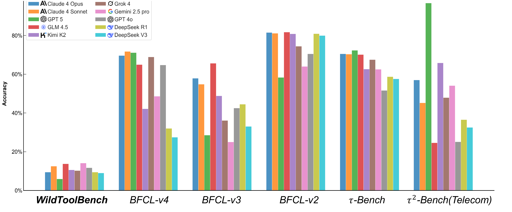
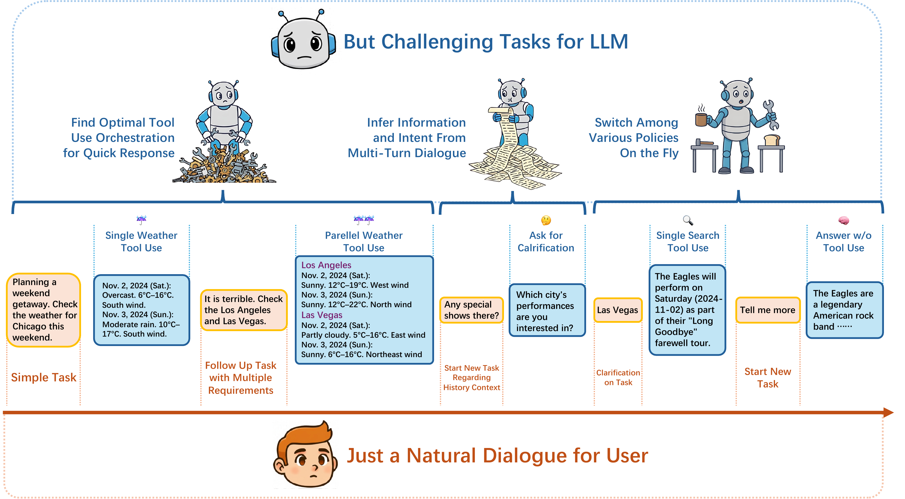
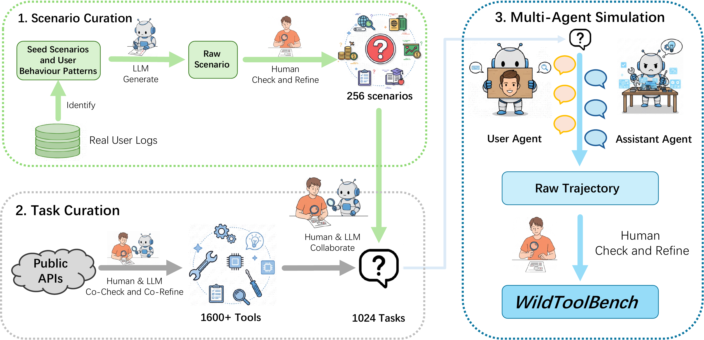
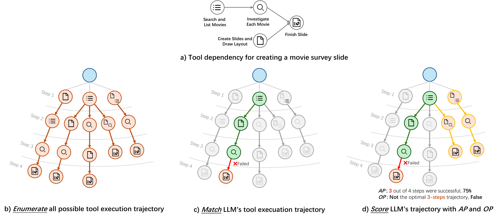
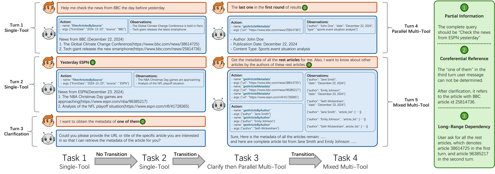
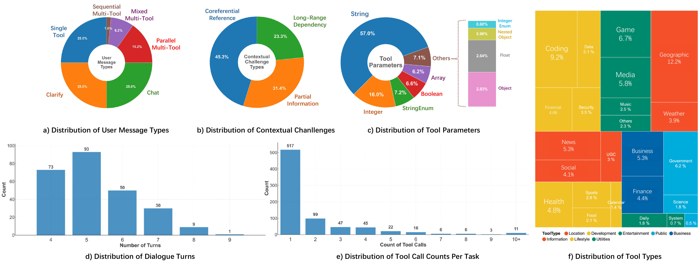

Benchmarking LLM Tool-Use
in the Wild
A comprehensive benchmark grounded in real-world user behavior patterns, revealing that no LLM achieves more than 15% session accuracy on wild tool-use scenarios.
Abstract
Fulfilling user needs through Large Language Model multi-turn, multi-step tool-use is rarely a straightforward process. Real user interactions are inherently wild, being intricate, messy, and flexible. We identify three key challenges from user behaviour: compositional tasks that demand efficient orchestration of tool-call topologies, implicit intent spread across dialogue turns that require contextual inference, and instruction transition, which mixes task queries, clarifications, and casual conversation, forcing LLMs to adjust their policies on the fly. Existing benchmarks overlook these behaviors, making the apparent progress of LLMs on tool-use spurious. To address this, we introduce WildToolBench, an LLM tool-use benchmark grounded in real-world user behavior patterns. Comprehensive evaluations of 57 LLMs reveal that no model achieves an accuracy of more than 15%, indicating a substantial gap in the robustness of LLMs' agentic ability.
Design Philosophy
"What truly challenges LLMs' tool-use capabilities is not artificially constructed complex scenarios, but simple yet realistic user behaviors" — namely, the compositionality, vagueness, and variability of user instructions.
Through a carefully constructed data pipeline combined with human verification and annotation (9 human experts over 1 month, 4 rounds of quality checks reaching 100% accuracy), we curate 256 scenarios with 1,024 tasks from 400 tool lists covering 1,600+ APIs.
Session Accuracy Comparison Among Benchmarks

Figure 1: While prior tool-use benchmarks tend to be saturated, WildToolBench remains highly challenging.
Natural for the User, Challenging for the LLM

Figure 2: WildToolBench poses three characteristics that seem easy and natural for the user, but challenging for the LLM tool-use.
Why WildToolBench?
Fulfilling user needs through LLM multi-turn, multi-step tool-use is rarely a straightforward process. Real user interactions are inherently wild — intricate, messy, and flexible.
We identify three key challenges from user behaviour: compositional tasks that demand efficient orchestration of tool-call topologies, implicit intent spread across dialogue turns requiring contextual inference, and instruction transition that mixes task queries, clarifications, and casual conversation.
Existing benchmarks overlook these behaviors, making the apparent progress of LLMs on tool-use spurious. We curate 256 scenarios with 1,024 tasks covering 1,600+ APIs from 400 tool lists. Evaluations of 57 LLMs show no model exceeds 15% session accuracy.
Formulation
We formalize the interaction between a user and an LLM as a multi-turn dialogue D = {u1, a1, u2, a2, ..., uN, aN}. Within this N-turn dialogue, there are M user tasks {g1, ..., gM} scattered throughout. The LLM needs to detect the user's intention and solve each task, which may require multi-step tool invocations forming a DAG Tj = {aT1, e1, ..., aTS, eS}.
User tasks are categorized into four types: gsingle (single tool call), gmulti (multi-step tool calls), gchat (direct question answering, S=0), and gclarify (requiring clarification). The LLM must switch policies on the fly as user intentions transition.
Data Curation Pipeline
The data curation pipeline follows three steps:
- Scenario Curation: We analyzed a large collection of real user logs to extract seed scenarios and summarize user behavior patterns. These patterns are used as few-shot examples, ensuring WildToolBench follows the same distribution as real logs without leaking user data.
- Task Curation: Following ToolAlpaca, we collected 1,600+ publicly available APIs from the internet, covering 400 tool lists. For each scenario, we selected a tool subset and generated four tasks with controlled task types. Human experts refined each task.
- Multi-Agent Simulation: We used a multi-agent system to generate initial trajectories. Each tool invocation was manually examined by 9 human experts and annotated as ground truth, producing the final dataset over 4 quality rounds.

The data curation pipeline of WildToolBench.
Comparison with Prior Benchmarks
| Benchmark | Contextual Multi-Task | Hidden Info % | Instruction Transition % | Sequential | Parallel | Mixed |
|---|---|---|---|---|---|---|
| WildToolBench | ✓ | 100% | 100% | ✓ | ✓ | ✓ |
| BFCL v3 | ✓ | 15.7% | 39.7% | × | ✓ | × |
| BFCL v2 | × | 0.0% | 0.0% | × | ✓ | × |
| ToolBench | × | 0.0% | 0.0% | ✓ | × | × |
| τ-bench | × | 0.0% | 0.0% | ✓ | × | × |
| τ2-bench | × | 0.0% | 0.0% | ✓ | × | × |
Three Wild Dimensions of User Behavior
We identify three key challenges from real user behavior that existing benchmarks fail to capture.
Challenge 1: Compositional Tasks
Multiple simple requirements combined into single instructions, demanding tool orchestration beyond simple chaining — sequential, parallel, and mixed topologies. WildToolBench uses an enumerate-match-score pipeline: enumerate all valid tool execution paths via DFS topological sorting, then match each LLM tool call against the decision tree, and finally score with Optimal Path Rate (OP) and Accomplish Progress Rate (AP).
Challenge 2: Implicit Intent
User intent spread across dialogue turns requiring contextual inference via three strategies: Partial Information (omitted info from prior turns), Coreferential Reference (pronouns/ellipsis referring to earlier entities), and Long-Range Dependency (missing info in distant turns, i−j>2).
Challenge 3: Instruction Transition
Users naturally transition between task-giving, follow-up, clarification, and casual chatting. Each scenario balances four task types (gsingle, gmulti, gchat, gclarify) with controlled switching frequency. Up to 3 transitions can occur within 4 tasks, and accuracy drops up to 30% as transitions increase.
Enumerate-Match-Score Pipeline

Visualization of the enumerate-match-score pipeline for evaluating tool orchestration ability.
Examples for Hidden Intention & Instruction Transition

These challenges arise from the very nature of real user behavior: the interaction is a coherent dialogue rather than isolated task submissions.
Model Performance
Task Accuracy and Session Accuracy across task types and task order.
gsingle=Single-Tool, gmulti=Multi-Tool, gclarify=Clarification, gchat=Chat. Tasks 1-4 = task order in session.
Tool Orchestration Evaluation
How well LLMs orchestrate parallel, sequential, and mixed tool-call topologies for compositional tasks.
AP Rate = Accomplish Progress Rate. OP Rate = Optimal Path Rate. Higher is better.
Error Distribution Analysis
Distribution of action errors and parameter errors. Values are percentages of total errors.
Action Errors: Refusal, Wrong Name/Missing Info, Wrong Refusal, Redundant Call, Call Error, Early Termination. Parameter Errors: Type Error, Hallucination, Value Error.
Benchmark at a Glance
WildToolBench features comprehensive coverage of real-world tool-use scenarios across 8 major categories and 24 subcategories.
Detailed Distributions

Distribution of user message types, contextual challenges, tool parameters, dialogue turns, tool call counts, and tool types.
Browse All 256 Sessions
Explore the full WildToolBench dataset. Each session contains 4 tasks with tool definitions, gold-standard action sequences (DAGs), and observations.
Inference Trajectories
Step-by-step visualization of model inference, including tool calls, reasoning, outputs, latency, and per-step correctness labels.
Cite Our Work
If you find WildToolBench useful in your research, please consider citing our paper.
@inproceedings{
yu2026wildtoolbench,
title={Benchmarking {LLM} Tool-Use in the Wild},
author={Peijie Yu and Wei Liu and Yifan Yang and Jinjian Li and Zelong Zhang and Xiao Feng and Feng Zhang},
booktitle={The Fourteenth International Conference on Learning Representations},
year={2026},
url={https://openreview.net/forum?id=yz7fL5vfpn}
}